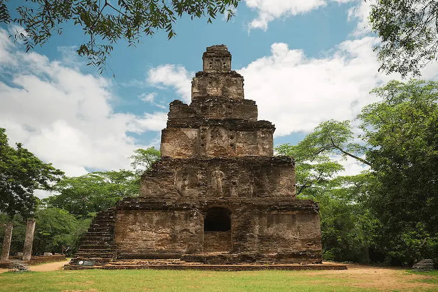
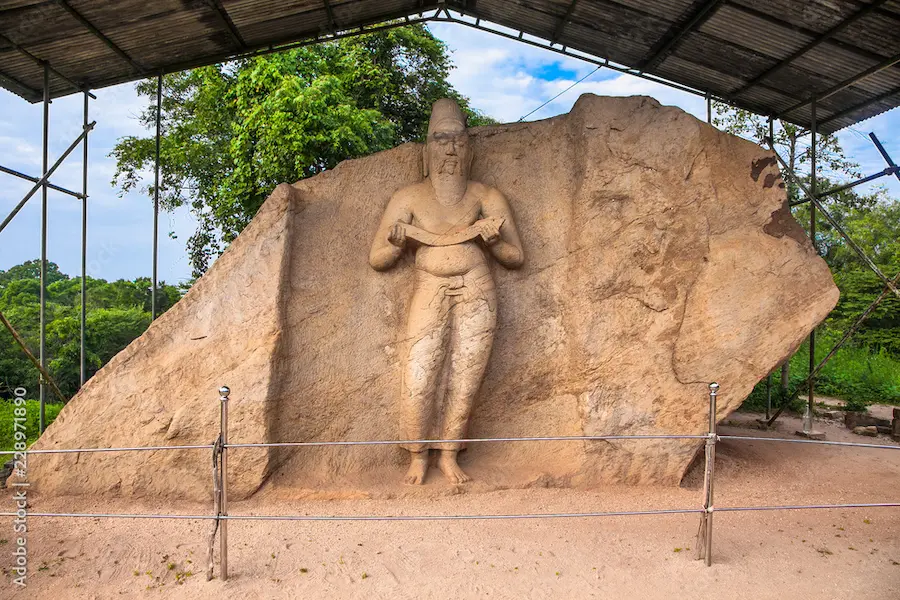

A few heritage sites in Polonnaruwa
- Gal Viharaya
- Sathmahal Prasadaya
- statue of King Parakramabahu I
- Sandakada Pahana
- Rankoth Vehera
- Nissanka Latha Mandapaya
Gal Viharaya
This is a stone sanctuary built under the rule of king Parakramabhahu the great. In this sanctuary there are four stone sculptures of the Lord Buddha. these stone sculptures shed light on the craftmanship that existed in sri lanka several thousand years ago.

Sathmahal Prasadaya
This is a seven storied stupa made of bricks that has takes the shape of a pyramid. due to the seven stories it is called "sathmahal prasadaya" , "Sathmahal " meaning seven. it is speculated to have been built by King parakramabahu I
statue of King Parakramabahu I
this statue was built during the 12th century AD by king parakramabahu I facing the parakrama Samudra Reservoir. The statue is speculated to be of the king parakramabahu I himself or of the sage , Rishi Pulastya.
